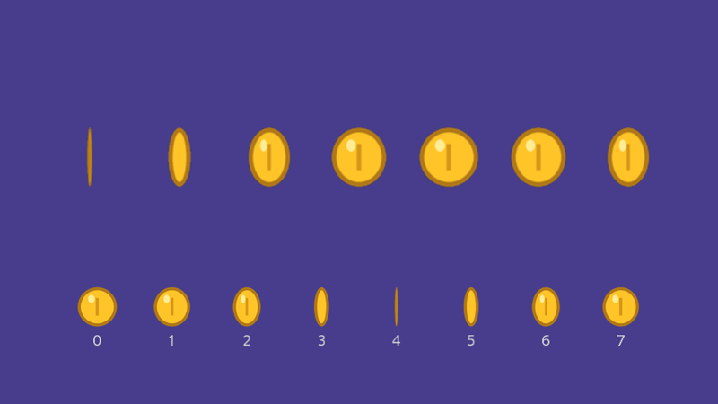
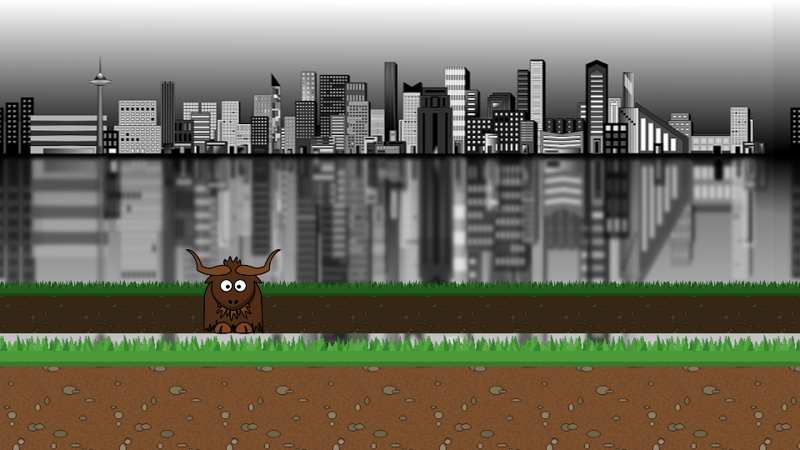
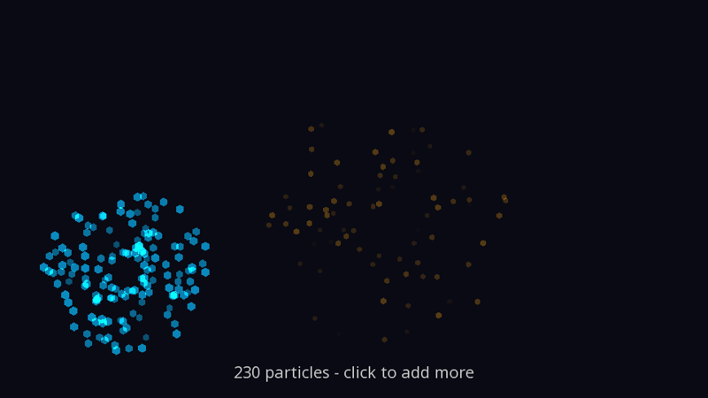
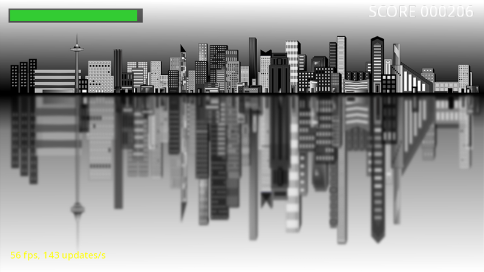
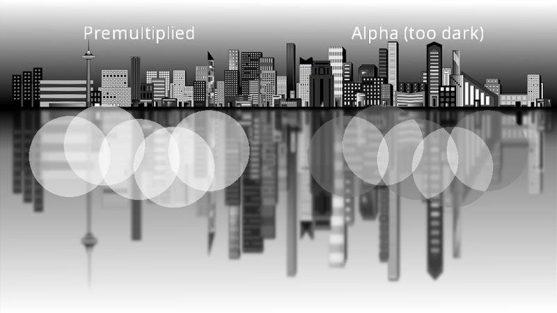

Cookbook
Short, complete answers to "how do I...?" questions that come up in almost every game. Each recipe is a small, runnable program: the code shown is taken from Recipes.cs and compiled every time these docs are published. Run any of them from the code/Snippets folder of the docs repository:
dotnet run -- SpriteAnimation
Like the guide examples, recipes derive from a tiny Example base class that provides a 960 x 540 window, quits on Escape, and recreates resources after a device reset.
| I want to... | Recipe |
|---|---|
| Animate a sprite from a sprite sheet | Sprite sheet animation |
| Shake the screen when something hits | Screen shake |
| Fade to black between scenes | Fade transitions |
| Scroll layered backgrounds at different speeds | Parallax scrolling |
| Make sparks, explosions and magic | Particles |
| Show health, score and frame rate | A HUD |
| Toggle full screen and pause the game | Full screen and pause |
| Draw a translucent layer over a scene | A transparent layer |
| ...and more | Recipes elsewhere in the docs |
Sprite sheet animation

A sprite sheet packs every frame of an animation into one texture. Choose the frame from the time, then show just that slice of the texture by setting the texture coordinates of DrawTexturedQuad. Texture coordinates run from 0 to 1 across the whole image, so with eight frames side by side, frame n spans n / 8 to (n + 1) / 8.
private const int FrameCount = 8; // frames side by side in coin.png
private const float FramesPerSecond = 12.0f;
// Draws one frame of a horizontal sprite sheet by choosing which slice of the texture to show
private void DrawFrame(IDrawingHelpers h, Vector2 position, float size, int frame, bool flip = false)
{
var left = frame / (float)FrameCount;
var right = (frame + 1) / (float)FrameCount;
if (flip)
{
(left, right) = (right, left); // swapping the x texture coordinates mirrors the sprite
}
h.DrawTexturedQuad(_drawStage, CoordinateSpace.Screen, _coin, Colour.White, position, size, size, 0.5f,
texcoord_min_x: left, texcoord_max_x: right);
}
public override void Drawing(IDrawing draw, IFps fps, IInput input, ICoordinateTransforms transforms,
float secondsSinceLastDraw, float secondsSinceLastUpdate)
{
_time += secondsSinceLastDraw;
var frame = (int)(_time * FramesPerSecond) % FrameCount;
// A row of coins, each started a frame later than the last, so they ripple
for (var n = 0; n < 7; n++)
{
DrawFrame(draw.Helpers, new Vector2(-360.0f + (n * 120.0f), 60.0f), 96.0f, (frame + n) % FrameCount);
}
// Every frame of the sheet, for reference
for (var n = 0; n < FrameCount; n++)
{
DrawFrame(draw.Helpers, new Vector2(-350.0f + (n * 100.0f), -140.0f), 64.0f, n);
draw.DrawString(_drawStage, CoordinateSpace.Screen, n.ToString(), Colour.LightGray, 20.0f,
new Vector2(-350.0f + (n * 100.0f), -180.0f), TextJustify.Centre, 0.5f, 0);
}
}
- Mirroring for free: swap the left and right texture coordinates to face a sprite the other way, rather than storing a flipped copy.
- Sheets in a grid work the same way: pick a row as well as a column, and set
texcoord_min_yandtexcoord_max_ytoo. - Faint lines at frame edges? Leave a pixel or two of transparent space round each frame, because filtering samples slightly into the neighbouring frame. For crisp pixel art, also load the sheet with SamplerType.Point (see Texture options).
- Because every frame comes from the same texture, a crowd of animated sprites still batches into very few GPU draw calls.
Screen shake
A shake is a small, fast, random offset added to the camera, which decays over time. Keeping a single _trauma value between 0 and 1, adding to it on each hit and letting it wear off, gives shakes that combine naturally when several things happen at once:
private float _trauma; // 0 = still, 1 = maximum shake
private float _time;
public override bool Update(IServices yak, float secondsSinceLastUpdate)
{
if (yak.Input.WasKeyPressedThisFrame(KeyCode.Space))
{
_trauma = MathF.Min(1.0f, _trauma + 0.6f); // hits add up, to a limit
}
_trauma = MathF.Max(0.0f, _trauma - (1.2f * secondsSinceLastUpdate)); // and wear off over time
return base.Update(yak, secondsSinceLastUpdate);
}
public override void PreDrawing(IServices yak, float secondsSinceLastDraw, float secondsSinceLastUpdate)
{
_time += secondsSinceLastDraw;
// Squaring makes small knocks subtle and big ones violent. Sine waves at unrelated frequencies
// give a smooth, random-looking wobble (use a noise function if you have one)
var shake = _trauma * _trauma;
var offset = new Vector2(MathF.Sin(_time * 41.0f) + MathF.Sin(_time * 23.0f),
MathF.Sin(_time * 37.0f) + MathF.Sin(_time * 19.0f)) * (12.0f * shake);
var angle = 0.05f * shake * MathF.Sin(_time * 29.0f);
var focus = Vector2.Zero; // wherever the camera would normally look
yak.Cameras.SetCamera2DFocusZoomAndRotation(_camera, focus + offset, 1.0f, angle);
}
The shake is applied in PreDrawing(), the place for camera moves, so it is as smooth as the frame rate allows. In a real game, add the offset to wherever your following camera is already looking.
Tip
Screen space is fixed to the camera's view, so screen-space text shakes too. Draw the HUD through a second, still camera if it should stay steady: see More than one camera.
Fade to black between scenes
Draw a black rectangle over the whole view, on a layer above everything else, and animate its alpha. Fade out, swap the scene while the screen is black, then fade back in:
private enum Fade { None, Out, In }
private const float FadeSeconds = 0.4f;
private Fade _fade = Fade.None;
private float _blackness; // 0 = scene fully visible, 1 = fully black
private int _scene;
public override bool Update(IServices yak, float secondsSinceLastUpdate)
{
if (_fade == Fade.None && yak.Input.WasKeyPressedThisFrame(KeyCode.Space))
{
_fade = Fade.Out;
}
var step = secondsSinceLastUpdate / FadeSeconds;
switch (_fade)
{
case Fade.Out:
_blackness = MathF.Min(1.0f, _blackness + step);
if (_blackness == 1.0f)
{
_scene = (_scene + 1) % 2; // swap scenes while the screen is black
_fade = Fade.In;
}
break;
case Fade.In:
_blackness = MathF.Max(0.0f, _blackness - step);
if (_blackness == 0.0f)
{
_fade = Fade.None;
}
break;
}
return base.Update(yak, secondsSinceLastUpdate);
}
public override void Drawing(IDrawing draw, IFps fps, IInput input, ICoordinateTransforms transforms,
float secondsSinceLastDraw, float secondsSinceLastUpdate)
{
var picture = _scene == 0 ? _city : _yakPhoto;
draw.Helpers.DrawTexturedQuad(_drawStage, CoordinateSpace.Screen, picture, Colour.White, Vector2.Zero, 960.0f, 540.0f, 0.9f);
draw.DrawString(_drawStage, CoordinateSpace.Screen, $"Scene {_scene + 1}: press Space", Colour.White, 32.0f,
new Vector2(0.0f, 230.0f), TextJustify.Centre, 0.5f, 0);
// A black rectangle over everything (a higher layer always draws on top), as opaque as the fade
if (_blackness > 0.0f)
{
draw.Helpers.DrawColouredQuad(_drawStage, CoordinateSpace.Screen, new Colour(0.0f, 0.0f, 0.0f, _blackness),
Vector2.Zero, 960.0f, 540.0f, 0.0f, layer: 100);
}
}
The fade runs in Update(), so it takes the same time however fast the computer is, and key presses are ignored while a fade is in progress.
For fades and colour changes applied to a whole rendered image, such as a slow fade to grey when the player dies, use a colour effects stage with a smooth transition instead. Yak Run part 4 does exactly that.
Parallax scrolling

Layers further away should move more slowly as the camera moves. A simple way to do this without any extra cameras is to draw each background layer in screen space, covering the view, and scroll its texture coordinates by a fraction of the camera's position. With TextureCoordinateMode.Wrap the texture repeats for ever, so the layers never run out:
// Draws a texture across the whole view, scrolled by a fraction of the camera's movement.
// 0 = fixed to the screen (infinitely far away), 1 = moves with the world
private void DrawBackdrop(IDrawingHelpers h, ITexture texture, Colour tint, float speed, float y, float height, float tileWidth, float depth)
{
var scroll = _cameraX * speed / tileWidth; // in texture widths; Wrap repeats the texture forever
h.DrawTexturedQuad(_drawStage, CoordinateSpace.Screen, texture, tint, new Vector2(0.0f, y), 960.0f, height, depth,
texcoord_min_x: scroll, texcoord_max_x: scroll + (960.0f / tileWidth),
textureMode: TextureCoordinateMode.Wrap);
}
public override void Drawing(IDrawing draw, IFps fps, IInput input, ICoordinateTransforms transforms,
float secondsSinceLastDraw, float secondsSinceLastUpdate)
{
var h = draw.Helpers;
// Far to near: each layer is nearer (lower depth) and scrolls faster than the one behind it.
// Distant layers are tinted darker and drawn smaller, which also helps them read as far away
DrawBackdrop(h, _city, Colour.White, 0.1f, 0.0f, 540.0f, 960.0f, 0.9f);
DrawBackdrop(h, _soil, new Colour(0.45f, 0.5f, 0.45f, 1.0f), 0.4f, -105.0f, 50.0f, 64.0f, 0.85f);
DrawBackdrop(h, _grass, new Colour(0.45f, 0.6f, 0.45f, 1.0f), 0.4f, -75.0f, 20.0f, 64.0f, 0.8f);
DrawBackdrop(h, _soil, Colour.White, 1.0f, -215.0f, 110.0f, 128.0f, 0.7f);
DrawBackdrop(h, _grass, Colour.White, 1.0f, -150.0f, 40.0f, 128.0f, 0.6f);
// The yak lives in world space, keeping pace with the camera
h.DrawTexturedQuad(_drawStage, CoordinateSpace.World, _yak, Colour.White, new Vector2(_cameraX - 200.0f, -80.0f), 120.0f, 107.0f, 0.5f);
}
Speed 1.0 keeps pace with the world (the ground the yak walks on); 0.1 barely moves (the distant city). Lower depth values are nearer, so each layer is drawn in front of the slower ones behind it.
For backgrounds that are made of separate objects (mountains, clouds) rather than tiling textures, give the background its own draw stage and camera, and move that camera more slowly. Yak Run part 3 shows that approach.
Particles

Particles are many small, short-lived shapes. Keep them in a list of plain structs, move them in Update(), and draw them every frame. Drawing onto a stage created with BlendState.AdditiveAlpha adds each particle's colour to what is behind it, so overlapping sparks glow brighter, like real light:
private struct Particle
{
public Vector2 Position;
public Vector2 Velocity;
public float Age;
public float Life;
public Colour Colour;
}
private readonly List<Particle> _particles = new List<Particle>();
private IDrawStage _glow;
public override bool CreateResources(IServices yak)
{
_camera = yak.Cameras.CreateCamera2D(960, 540);
_background = yak.Stages.CreateDrawStage();
// Additive blending: overlapping sparks add up and get brighter, like light does
_glow = yak.Stages.CreateDrawStage(true, BlendState.AdditiveAlpha);
return true;
}
private void Burst(Vector2 at, Colour colour)
{
for (var n = 0; n < 150; n++)
{
var angle = (float)_random.NextDouble() * MathF.Tau;
var speed = 60.0f + (260.0f * (float)_random.NextDouble());
_particles.Add(new Particle
{
Position = at,
Velocity = speed * new Vector2(MathF.Cos(angle), MathF.Sin(angle)),
Life = 0.8f + (0.8f * (float)_random.NextDouble()),
Colour = colour,
});
}
}
public override bool Update(IServices yak, float secondsSinceLastUpdate)
{
// A burst wherever the mouse is clicked, and one every so often on its own
if (yak.Input.WasMousePressedThisFrame(MouseButton.Left))
{
var at = yak.Helpers.CoordinateTransforms.ScreenFromWindow(yak.Input.MousePosition, _camera).Position;
Burst(at, Colour.Gold);
}
_time += secondsSinceLastUpdate;
if (_time > _nextBurst)
{
var at = new Vector2(_random.Next(-380, 380), _random.Next(-120, 180));
Burst(at, _random.Next(2) == 0 ? Colour.Orange : Colour.DeepSkyBlue);
_nextBurst = _time + 0.6f;
}
// Move, slow down, fall, age. Remove from the end backwards so the indexes stay valid
for (var n = _particles.Count - 1; n >= 0; n--)
{
var p = _particles[n];
p.Velocity = (p.Velocity * (1.0f - (1.5f * secondsSinceLastUpdate))) + new Vector2(0.0f, -220.0f * secondsSinceLastUpdate);
p.Position += p.Velocity * secondsSinceLastUpdate;
p.Age += secondsSinceLastUpdate;
if (p.Age >= p.Life)
{
_particles.RemoveAt(n);
}
else
{
_particles[n] = p;
}
}
return base.Update(yak, secondsSinceLastUpdate);
}
public override void Drawing(IDrawing draw, IFps fps, IInput input, ICoordinateTransforms transforms,
float secondsSinceLastDraw, float secondsSinceLastUpdate)
{
foreach (var p in _particles)
{
// Fade out and shrink over the particle's life. With additive blending the colour is scaled
// by its alpha before being added, so fading the alpha alone is enough
var fade = 1.0f - (p.Age / p.Life);
var colour = new Colour(p.Colour.R, p.Colour.G, p.Colour.B, fade);
draw.Helpers.DrawColouredPoly(_glow, CoordinateSpace.Screen, colour, p.Position, 6, 3.0f + (5.0f * fade), 0.5f);
}
draw.DrawString(_background, CoordinateSpace.Screen, $"{_particles.Count} particles - click to add more", Colour.Gray, 22.0f,
new Vector2(0.0f, -230.0f), TextJustify.Centre, 0.5f, 0);
}
public override void Rendering(IRenderQueue q, IRenderTarget windowRenderTarget)
{
q.ClearColour(windowRenderTarget, new Colour(0.04f, 0.04f, 0.08f, 1.0f));
q.ClearDepth(windowRenderTarget);
q.Draw(_background, _camera, windowRenderTarget);
q.ClearDepth(windowRenderTarget); // so the glow is never hidden behind the background's depth
q.Draw(_glow, _camera, windowRenderTarget);
}
- Thousands are fine. Every particle here is one small coloured polygon on one stage, so they all go to the GPU together.
- Use textures for soft or shaped particles: swap
DrawColouredPolyforDrawTexturedQuadwith a small blurred-dot image, all from one texture or sprite sheet. - More glow: render the particles into a render target and run bloom over it.
- The struct is copied out of the list, changed and written back, because a
List<T>of structs cannot be changed in place.
A HUD: health bar, score and FPS

HUD elements belong in screen space, which is fixed to the camera's view with (0,0) in the middle. For a 960 x 540 camera the edges are at x = ±480 and y = ±270, so position everything relative to those. Text justification helps: right-justified text grows leftwards from the point you give, which keeps a score tucked into the right-hand corner.
// Screen space has (0,0) in the centre, so the edges of a 960 x 540 camera are at x = +-480, y = +-270
private const float Left = -480.0f;
private const float Right = 480.0f;
private const float Top = 270.0f;
private const float Margin = 20.0f;
// A bar that empties from right to left. Quads are positioned by their centre, so the
// filled part's centre moves left as it shrinks
private void DrawBar(IDrawingHelpers h, Vector2 topLeft, float width, float height, float amount, Colour colour)
{
var centre = topLeft + new Vector2(0.5f * width, -0.5f * height);
h.DrawColouredQuad(_drawStage, CoordinateSpace.Screen, new Colour(0.0f, 0.0f, 0.0f, 0.6f), centre, width + 6.0f, height + 6.0f, 0.3f, 10);
var filled = width * Math.Clamp(amount, 0.0f, 1.0f);
h.DrawColouredQuad(_drawStage, CoordinateSpace.Screen, colour, topLeft + new Vector2(0.5f * filled, -0.5f * height), filled, height, 0.2f, 10);
}
public override void Drawing(IDrawing draw, IFps fps, IInput input, ICoordinateTransforms transforms,
float secondsSinceLastDraw, float secondsSinceLastUpdate)
{
_time += secondsSinceLastDraw;
draw.Helpers.DrawTexturedQuad(_drawStage, CoordinateSpace.Screen, _city, Colour.White, Vector2.Zero, 960.0f, 540.0f, 0.9f);
// Top left: a health bar that changes colour as it drops
var health = 0.55f + (0.45f * MathF.Sin(0.8f * _time));
var barColour = health > 0.3f ? Colour.LimeGreen : Colour.Red;
DrawBar(draw.Helpers, new Vector2(Left + Margin, Top - Margin), 260.0f, 22.0f, health, barColour);
// Top right: a score, right-justified so it grows leftwards from the corner
var score = (int)(_time * 137.0f);
draw.DrawString(_drawStage, CoordinateSpace.Screen, $"SCORE {score:000000}", Colour.White, 30.0f,
new Vector2(Right - Margin, Top - Margin + 4.0f), TextJustify.Right, 0.2f, 10);
// Bottom left: frame rates, from the IFps given to Drawing()
draw.DrawString(_drawStage, CoordinateSpace.Screen, $"{fps.DrawFPS:0} fps, {fps.UpdateFPS:0} updates/s", Colour.Yellow, 18.0f,
new Vector2(Left + Margin, -Top + Margin + 18.0f), TextJustify.Left, 0.2f, 10);
}
Quads are positioned by their centre, so a bar that empties to the left needs its centre moved as its width shrinks, as DrawBar does. A high layer (here 10) keeps the HUD above the game whatever depths the game uses. The frame rates come from the IFps passed to Drawing().
Full screen and pause
Two things players expect from any game: a full-screen toggle, and pausing when they switch to another window.
private bool _paused;
public override void ProcessMessage(FrameworkMessage msg, IServices yak)
{
base.ProcessMessage(msg, yak); // keeps recreating resources after a device reset
// Pause automatically when the player switches to another window
if (msg == FrameworkMessage.WindowLostFocus)
{
_paused = true;
}
}
public override bool Update(IServices yak, float secondsSinceLastUpdate)
{
var input = yak.Input;
// F11 toggles between a window and borderless full screen (which switches instantly,
// without changing the display mode)
if (input.WasKeyPressedThisFrame(KeyCode.F11))
{
var fullScreen = yak.Display.DisplayState == DisplayState.BorderlessFullScreen;
yak.Display.SetDisplayState(fullScreen ? DisplayState.Normal : DisplayState.BorderlessFullScreen);
}
if (input.WasKeyPressedThisFrame(KeyCode.P))
{
_paused = !_paused;
}
if (!_paused)
{
_spin += secondsSinceLastUpdate; // the "game": skipped entirely while paused
}
return base.Update(yak, secondsSinceLastUpdate);
}
- DisplayState.BorderlessFullScreen covers the screen with a borderless window, which switches quickly and plays well with alt-tab.
DisplayState.FullScreenis exclusive full screen. See Window, display and graphics API. - FrameworkMessage.WindowLostFocus arrives through ProcessMessage(). The override calls
base.ProcessMessage()so resources are still recreated after a device reset. - Pausing just means not advancing the game in
Update(). Drawing carries on, so the paused scene (and a "paused" message) stays on screen.
A transparent layer over a scene

Sometimes a group of translucent things should be drawn into a render target of its own first: so it can be blurred, faded or distorted as one, or reused. A render target cleared to Colour.Clear and drawn into with Alpha blending holds premultiplied colour, and must be drawn over the scene with a stage using BlendState.Premultiplied (yak2D 1.2.0 and later):
private IDrawStage _puffs; // draws translucent shapes into the layer
private IRenderTarget _layer; // starts fully transparent each frame
private IDrawStage _premultiplied; // composites the layer correctly
private IDrawStage _alpha; // composites it the naive way, for comparison
public override bool CreateResources(IServices yak)
{
_camera = yak.Cameras.CreateCamera2D(960, 540);
_background = yak.Stages.CreateDrawStage();
_city = yak.Surfaces.LoadTexture("city", AssetSourceEnum.Embedded);
_puffs = yak.Stages.CreateDrawStage();
_layer = yak.Surfaces.CreateRenderTarget(960, 540);
_premultiplied = yak.Stages.CreateDrawStage(true, BlendState.Premultiplied);
_alpha = yak.Stages.CreateDrawStage(true, BlendState.Alpha);
return true;
}
public override void Drawing(IDrawing draw, IFps fps, IInput input, ICoordinateTransforms transforms,
float secondsSinceLastDraw, float secondsSinceLastUpdate)
{
draw.Helpers.DrawTexturedQuad(_background, CoordinateSpace.Screen, _city, Colour.White, Vector2.Zero, 960.0f, 540.0f, 0.9f);
// The same soft white clouds on both halves of the layer: overlapping, half-transparent circles
foreach (var x in new[] { -240.0f, 240.0f })
{
for (var n = 0; n < 5; n++)
{
var puff = new Vector2(x - 120.0f + (n * 60.0f), 20.0f * MathF.Sin(n * 1.7f));
draw.Helpers.DrawColouredPoly(_puffs, CoordinateSpace.Screen, new Colour(1.0f, 1.0f, 1.0f, 0.5f), puff, 48, 70.0f, 0.5f);
}
}
// The layer is a texture, so it can be drawn like one. Left half: Premultiplied. Right half: Alpha
draw.Helpers.DrawTexturedQuad(_premultiplied, CoordinateSpace.Screen, _layer, Colour.White, new Vector2(-240.0f, 0.0f), 480.0f, 540.0f, 0.5f,
texcoord_max_x: 0.5f);
draw.Helpers.DrawTexturedQuad(_alpha, CoordinateSpace.Screen, _layer, Colour.White, new Vector2(240.0f, 0.0f), 480.0f, 540.0f, 0.5f,
texcoord_min_x: 0.5f);
draw.DrawString(_background, CoordinateSpace.Screen, "Premultiplied", Colour.White, 30.0f, new Vector2(-240.0f, 220.0f), TextJustify.Centre, 0.5f, 0);
draw.DrawString(_background, CoordinateSpace.Screen, "Alpha (too dark)", Colour.White, 30.0f, new Vector2(240.0f, 220.0f), TextJustify.Centre, 0.5f, 0);
}
public override void Rendering(IRenderQueue q, IRenderTarget windowRenderTarget)
{
// 1. Draw the translucent shapes into the transparent layer
q.ClearColour(_layer, Colour.Clear);
q.Draw(_puffs, _camera, _layer);
// 2. Draw the background, then the layer over it, onto the window
q.ClearColour(windowRenderTarget, Colour.Black);
q.ClearDepth(windowRenderTarget);
q.Draw(_background, _camera, windowRenderTarget);
q.ClearDepth(windowRenderTarget);
q.Draw(_premultiplied, _camera, windowRenderTarget);
q.Draw(_alpha, _camera, windowRenderTarget);
}
The left half uses Premultiplied and the clouds are clean white. The right half draws exactly the same layer with Alpha, which scales the colour by alpha a second time, so the soft areas turn grey. See Transparent render targets.
Note the order in Rendering(): the layer is rendered before the stage that draws it, because the render queue runs in the order it is built. A render target is also a texture, so it can be drawn with any texture-drawing function.
Recipes elsewhere in these docs
| I want to... | Where |
|---|---|
| Make the camera follow the player smoothly | Cameras: Following a player |
| Find what the mouse is pointing at in the world | Coordinate systems: Converting between spaces |
| Give my game a chunky, low-resolution pixel-art look | Surfaces: A retro, low-resolution look |
| Split the screen between two players | Viewports |
| Draw text that fits in a box | Text: Measuring text |
| Draw thousands of unchanging shapes cheaply | Drawing: Drawing things once |
| Make something glow | Effects: Bloom |
| Add ripples and shock waves | Distortion |
| Blend smoothly between two effect settings | Smooth transitions |
| Read a pixel's colour back from the GPU | Reading pixels back |
| Make a texture from my own pixel data | Surfaces: Textures from data |
| Wrap the game onto a curved CRT screen | 3D meshes |
| Write my own effect | Writing a custom shader |
| Ship the game to players | Distributing your game |